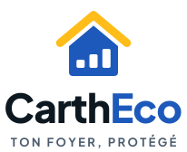
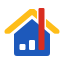

Direction B “Toit-garde”: the Chams roof guards the home, the three bars are the STEG tranches, the tallest always stays under the roof.
Horizontal · default

Stacked · posters, the box
Reversed · dark backgrounds
Roof over the name · pitch slide
App icon 120 · 64 · Bahr tile at 40 · favicon cut at 20
Mark on Bahr
Mark sizes 96 · 48 · 24
Sous le toit · default
Toit proche · tallest bar turns Harissa and grows

Tranche dépassée · the bar breaks through the roof